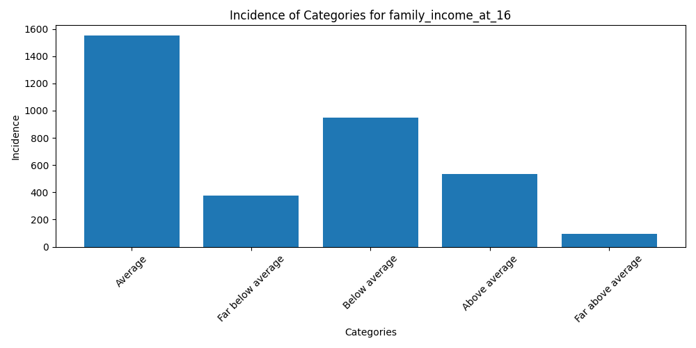
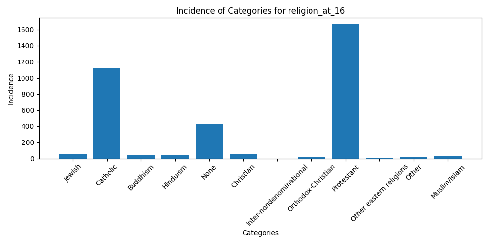

Demographics Report
last_name
- mode: Johnson
- count: 3505
age
- mean: 48.378316690442226
- median: 47
- stdev: 17.677139611931683
- min: 18
- max: 89
ethnicity
- mode: Germany
- count: 3505
hispanic_origin
- mode: Not Hispanic
- count: 3505
street_address
- mode: 123 Elm Street
- count: 3505
city
- mode: Charleston
- count: 3505
political_views
- mode: Moderate, middle of the road
- count: 3505
party_identification
- mode: Independent (neither, no response)
- count: 3505
residence_at_16
- mode: South Atlantic
- count: 3505
same_residence_since_16
- mode: Same city
- count: 3505
family_structure_at_16
- mode: Lived with parents
- count: 3505
family_income_at_16
- mode: Average
- count: 3505

fathers_highest_degree
- mode: High school
- count: 3505
mothers_highest_degree
- mode: High school
- count: 3505
marital_status
- mode: Married
- count: 3505
work_status
- mode: Working full time
- count: 3505
military_service_duration
- mode: No active duty
- count: 3505
religion
- mode: Protestant
- count: 3505
religion_at_16
- mode: Protestant
- count: 3505

us_citizenship_status
- mode: A U.S. citizen
- count: 3505
highest_degree_received
- mode: High school
- count: 3505
total_wealth
- mode: Less than $5,000
- count: 3505